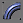

Modélisation d'un bâché Kils (2nde partie)
La première partie de ce tutorial a permis de modéliser un quart de la bâche du kils. Les autres parties seront obtenues par symétrie. Le premier travail est de texturer la bâche. Ce travail ne sera effectué que sur une moitié. La symétrie permettra d'obtenir une autre demi-bâche déjà texturée. Pourquoi faire deux fois ce qu'on peut faire en une seule?
Sélectionner le quart de bâche. Cliquer sur le bouton Align
 .
Aligner la bâche par rapport à elle-même, sur l'axe
Y, en paramétrant Minimum pour Current Object, Maximum
pour Target Object.
.
Aligner la bâche par rapport à elle-même, sur l'axe
Y, en paramétrant Minimum pour Current Object, Maximum
pour Target Object.
Sélectionner World comme repère de référence
et placer le repère courant à l'origine du repère
de référence. Cette phrase n'était pas claire?? Bon,
il faut régler comme ça: 
Cliquer sur le bouton de symétrie  et, dans la fenêtre qui s'ouvre, régler Mirror Axis
sur Y et Clone Selection sur Copy.
et, dans la fenêtre qui s'ouvre, régler Mirror Axis
sur Y et Clone Selection sur Copy.
Dans le panneau de commande Modify , cliquer sur Attach puis sélectionner la permière partie de la bâche. Ces deux quarts de bâche sont désormais fusionnées un objet unique. Toutefois, l'arête à la jonction est visible.
Ce n'est pas un problème de groupe de lissage. Car, par symétrie, les groupes de lissage des facettes de part et s'autre de cette arête sont identiques.
Le problème est que la copie concerne également les vertices de cette arête. Il y a donc deux arêtes confondues dans l'espace. Il faut fusionner les vertices pour n'obtenir qu'une seule arête et le lissage désiré. De même, dans de la première partie de ce tutorial, nous générions des points doubles en étirant le bas de la bâche.
ans le panneau de commande Modify ,
cliquer sur l'icône Vertex  .
Sélectionner tous les vertices. Le panneau de commande affiche
158 vertices. Dans le panneau déroulant Edit Geometry se
trouve une section Weld (souder en anglais). La valeur à
côté du bouton Selected affiche 0,1. Cela veut dire
que la fonction va souder les vertices proches d'une distance inférieure
à 10 cm. Ce qui risquerait d'endommager des modèles fins.
Dans notre cas, les points doubles sont deux points jumeaux ayant des
coordonnées spatiales identiques à la précision de
gmax près. Il convient de régler la valeur à 0,001
pour éviter tout problème. Cliquer sur Selected.
Il n'y a plus que 150 vertices et l'arête est lissée.
.
Sélectionner tous les vertices. Le panneau de commande affiche
158 vertices. Dans le panneau déroulant Edit Geometry se
trouve une section Weld (souder en anglais). La valeur à
côté du bouton Selected affiche 0,1. Cela veut dire
que la fonction va souder les vertices proches d'une distance inférieure
à 10 cm. Ce qui risquerait d'endommager des modèles fins.
Dans notre cas, les points doubles sont deux points jumeaux ayant des
coordonnées spatiales identiques à la précision de
gmax près. Il convient de régler la valeur à 0,001
pour éviter tout problème. Cliquer sur Selected.
Il n'y a plus que 150 vertices et l'arête est lissée.
Texture et mapping
Nous allons texturer la demi-bâche avec cette image.
Avant tout, il faut créer un matériau utilisant cette texture.
Ouvrir le gestionnaire de matériaux  ,
cliquer sur New. Dans le cadre Texture, cliquer sur Open
et choisir la texture sur le disque dur. Dans le cadre Train Sim Material
Settings, laisser Shader sur TexDiff (matériau
opaque), régler Mip LOD Bias à -3 pour retarder l'effet
du Mip Mapping de 3 niveaux. Cliquer sur Put!. Le matériau est
affecté à l'objet courant, c'est à dire la bâche.
,
cliquer sur New. Dans le cadre Texture, cliquer sur Open
et choisir la texture sur le disque dur. Dans le cadre Train Sim Material
Settings, laisser Shader sur TexDiff (matériau
opaque), régler Mip LOD Bias à -3 pour retarder l'effet
du Mip Mapping de 3 niveaux. Cliquer sur Put!. Le matériau est
affecté à l'objet courant, c'est à dire la bâche.
Il faut mapper désormais. Dans la liste des modificateurs, cliquer sur UVW Map. Configurer le cadre Mapping en Planar, le cadre Alignment sur X et cliquer sur Bitmap Fit. Choisir la même texture. Ainsi le mapping se base sur une forme carrée comme la texture et les mappings sur les axes U et V sont proportionnels.
Le cadre orange représente le mapping. Il est carré mais pas à la bonne échelle.
Dans la liste des modificateurs, cliquer sur Unwrap UVW. puis sur le bouton Edit. L'éditeur s'ouvre. Sélectionner tous les points de mapping. A l'aide des fonctions d'échelle et de translation, caler les coordonnées de mapping par rapport à l'image. La texture sera inversée, alors utiliser le bouton de symétrie.
Réajuster les points pour rattrapper les défauts de la texture. Une fois le mapping terminé, voici le résultat:
Comme pour la première symétrie, replacer le repère
à l'origine de World. Cliquer sur  et, dans la fenêtre qui s'ouvre, régler Mirror Axis
sur XY et Clone Selection sur Copy.
et, dans la fenêtre qui s'ouvre, régler Mirror Axis
sur XY et Clone Selection sur Copy.
Cliquer droit sur les modificateurs et cliquer sur Collapse All dans le menu contextuel. L'objet est devenu une Editable Mesh. Fusionner les deux demi-bâches avec la fonction Attach.
Mise à l'origine du repère
Si le pivot de la bâche n'est pas placé en (0,0,0) dans le repère World, nous risquons de grosses surprises dans le jeu.
Le rendu sous MSTS donne ceci: